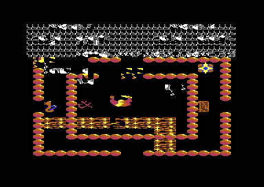
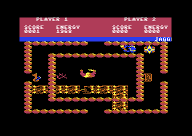
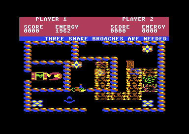
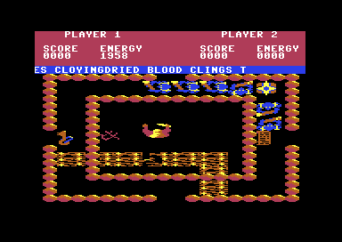
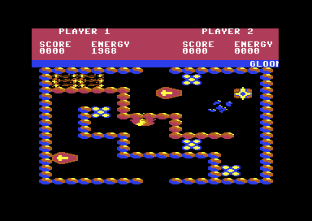

<meta charset="utf-8">
<meta name="viewport" content="width=device-width, initial-scale=1">
<title>Storm</title>
<link rel="preconnect" href="https://fonts.googleapis.com">
<link rel="stylesheet" href="https://fonts.googleapis.com/css2?family=Lato:wght@400;700;900&family=IBM+Plex+Mono:wght@400;500&display=swap">
<style>
:root{
  --bg:#23262d; --paper:#e9e7e1; --surface:#ffffff; --surface-2:#f1efea; --line:#d5d3cc; --line-soft:#e0ded8;
  --ink:#2f3136; --ink-soft:#55585f; --ink-mute:#80838a;
  --link:#1f5fa8; --link-hover:#154480; --accent:#1f5fa8;
  --amber:#c25a00; --cyan:#1f5fa8; --coral:#d04a3a; --green:#2a8a4a; --violet:#4a5bd6; --hl:#fff0c2;
  --chip:#2f3136; --chip-ink:#ffffff;
  --c64blue:#40318d; --c64grey:#686868;
  --fd:'Lato',system-ui,sans-serif; --fb:'Lato',system-ui,sans-serif; --fm:'IBM Plex Mono',ui-monospace,Menlo,monospace;
  --col:1080px; --gx:68px; --fs:17px; --lh:1.6; --hw:900; --h1:46px; --h2:26px; --sy:48px; --pp:26px; --r:10px;
  --plate-shadow:0 1px 2px rgba(0,0,0,.05),0 4px 14px rgba(0,0,0,.05);
}
*{box-sizing:border-box}
html{background:var(--bg);min-height:100%}
body{background:var(--paper);color:var(--ink);font-family:var(--fb);font-size:var(--fs);line-height:var(--lh);max-width:var(--col);margin:0 auto;min-height:100vh;padding:0 0 4rem}
h1,h2,h3{font-weight:var(--hw);letter-spacing:-.01em;text-wrap:balance;color:var(--ink);margin:0}
.wrap{padding:0 var(--gx)}
.hero{padding:48px var(--gx) 8px;text-align:left}
.eyebrow{font-family:var(--fm);font-size:12px;letter-spacing:.08em;text-transform:uppercase;color:var(--ink-mute);margin:0 0 10px}
.hero h1{font-size:var(--h1);line-height:1.15;letter-spacing:-.02em;margin:0 0 14px}
.hero .sub{margin:0 0 .6em;color:var(--ink-soft)}
section{padding:var(--sy) 0 24px}
section:last-of-type{border-bottom:none}
.fig{font-family:var(--fm);font-size:12px;letter-spacing:.08em;text-transform:uppercase;color:var(--ink-mute);margin:0 0 10px}
h2.t{font-size:var(--h2);margin-bottom:12px}
.lede{color:var(--ink-soft);margin:0 0 30px}
.plate{background:var(--surface);border:1px solid var(--line);border-radius:var(--r);padding:var(--pp);box-shadow:var(--plate-shadow)}
.cap{font-size:14px;color:var(--ink-mute);margin-top:14px;line-height:1.55}
.cap b{color:var(--ink);font-weight:700}
code{font-family:var(--fm);font-size:.82em;background:var(--chip);color:var(--chip-ink);border-radius:4px;padding:2px 6px;white-space:nowrap}

.st-cv{display:block;width:100%;height:auto;image-rendering:pixelated;background:#000;border-radius:4px}
.st-stack{position:relative}
.st-stack canvas+canvas{position:absolute;left:0;top:0;background:transparent;pointer-events:none}
.st-two{display:grid;grid-template-columns:1fr 1fr;gap:16px;margin:0 0 20px}
.st-fig{margin:0}
.st-fig img{display:block;width:100%;height:auto;image-rendering:pixelated;border-radius:4px}
.st-row{display:flex;flex-wrap:wrap;gap:10px 14px;align-items:center;margin:12px 0;font-family:var(--fm);font-size:13px;color:var(--ink-soft)}
.st-row label{display:flex;gap:6px;align-items:center}
.st-btn{font:inherit;font-family:var(--fm);font-size:13px;background:var(--surface);border:1px solid var(--line);border-radius:6px;padding:5px 12px;color:var(--ink);cursor:pointer}
.st-btn:hover{border-color:var(--ink-mute)}
.st-btn[aria-pressed="true"]{background:var(--chip);color:var(--chip-ink);border-color:var(--chip)}
.st-out{font-family:var(--fm);font-size:13px;color:var(--ink);margin:10px 0 0;min-height:1.5em;line-height:1.55}
.st-note{font-family:var(--fm);font-size:13px;color:var(--coral);margin:8px 0 0}
.st-tbl{border-collapse:collapse;font-size:14px;width:100%;margin:12px 0 18px}
.st-tbl th,.st-tbl td{text-align:left;vertical-align:top;padding:6px 10px;border-bottom:1px solid var(--line-soft)}
.st-tbl th{font-weight:700;color:var(--ink-soft)}
.st-wide{overflow-x:auto}
.st-form{display:flex;flex-wrap:wrap;gap:10px 16px;align-items:center;font-family:var(--fm);font-size:13px;color:var(--ink-soft)}
.st-form input,.st-form select,.st-row select{font:inherit;font-size:13px;padding:4px 6px;border:1px solid var(--line);border-radius:6px;background:var(--surface);color:var(--ink)}
.st-form input{width:6.5em}
.st-slots{display:grid;grid-template-columns:repeat(10,minmax(0,1fr));gap:4px;margin:10px 0 0;font-family:var(--fm);font-size:11px;text-align:center}
.st-slots div{border:1px solid var(--line);border-radius:5px;padding:4px 2px;color:var(--ink-mute);background:var(--surface-2)}
.st-slots div.st-on{color:var(--ink);background:var(--surface);border-color:var(--ink-mute)}
.st-slots b{display:block;font-weight:500;color:var(--ink)}
.st-gal{display:grid;grid-template-columns:repeat(auto-fill,minmax(112px,1fr));gap:10px}
.st-card{border:1px solid var(--line-soft);border-radius:6px;padding:6px;font-family:var(--fm);font-size:11px;color:var(--ink-soft);line-height:1.4}
.st-card canvas{display:block;width:96px;height:48px;image-rendering:pixelated;background:#000;border-radius:3px;margin:0 0 4px}
.st-card b{display:block;color:var(--ink);font-weight:500}
@media (max-width:640px){:root{--gx:16px}.st-two{grid-template-columns:1fr}.st-slots{grid-template-columns:repeat(5,minmax(0,1fr))}}
.st-cv[hidden]{display:none}
.st-steps{display:flex;flex-wrap:wrap;gap:6px;margin:0 0 12px}
.st-steps button[aria-current="step"]{background:var(--ink);color:var(--surface);border-color:var(--ink)}
.st-say{min-height:3.2em}
.st-grid td{text-align:center}
.st-text{font-family:var(--fm);font-size:13px;line-height:1.7;word-break:break-all;background:#2e2c9b;color:#fff;padding:8px 10px;border-radius:6px}
.st-text mark{background:#c46c71;color:#fff}
.st-bytes{font-family:var(--fm);font-size:13px;display:flex;flex-wrap:wrap;gap:4px}
.st-bytes span{border:1px solid var(--line);border-radius:4px;padding:2px 6px;background:var(--surface-2)}
.st-bytes span.st-sig{background:var(--hl);border-color:var(--amber)}
</style>
<!-- tabs -->
<header class="hero">
  <p class="eyebrow">1986 · Mastertronic</p>
  <h1>Storm</h1>
  <p class="sub">What the code does that the manual never mentions. A spell that should clear a room can leave a monster standing, and brooches kept from an earlier game can lock Corrine's door until the game is loaded again.</p>
</header>
<main class="wrap">

<section id="spell">
  <p class="fig">01 · The spell</p>
  <h2 class="t">Bug: after a kill, a spell leaves a monster standing</h2>
  <p class="lede">A scroll or an amulet clears the monsters by counting slots up to the number of monsters out. Kill one in a low slot first and the count stops short of the last one.</p>
  <div class="plate" id="st-spell">
    <div class="st-steps" id="st-spell-steps"></div>
    <p class="st-say" id="st-spell-say"></p>
    <canvas id="st-spell-cv" class="st-cv" width="320" height="144"></canvas>
    
    <p class="st-out" id="st-spell-out"></p>
    <div class="st-slots" id="st-spell-slots"></div>
    <p class="cap">Room 0 with Agravain standing where a new game puts him, run on the page's 6502 over the listing's bytes: the main loop's monster work (<code>move_monster</code>, <code>spawn</code>), the monster branch of <code>shot_hit</code> (<code>$7D0C</code>) for each shot, and the scroll's magic (<code>$69C0</code>). Checked against the kit's 6502 simulator: every byte of memory matches after each step up to the second scroll, which neither runs to its end. The last picture is the emulator's.</p>
  </div>
  <p>The magic (<a href="source.html#69C0"><code>$69C0</code></a>) takes the slots from 0 and stops when the slot number reaches <code>mon_count</code>, then sets the count to 0. That is right only while the monsters fill the lowest slots. A shot that kills the monster in slot 0 leaves five out in slots 1 to 5, so the spell stops after slot 4 and slot 5's monster walks on, uncounted.</p>
  <p>Shoot it and <code>shot_hit</code> takes one from a count that is already 0, which leaves 255. <code>spawn</code> makes no monster while ten or more are out, so the room's generators stand idle until the players leave and come back, when <code>enter_room</code> sets the count to 0 again. In the emulator no monster appeared in 1,500 frames with the generator standing.</p>
  <p>A second scroll in that room loops over 255 slots, reading positions from the bytes after the monster tables and erasing at the addresses they make. In the emulator it wrote over the panel and the play area, and the game froze: the main loop never ran again, and the raster interrupt fired about a hundred times a frame.</p>
  <div class="st-two">
    <figure class="st-fig"><p class="cap">In the emulator: slot 0 shot, then a scroll. Slot 5's monster is still there.</p></figure>
    <figure class="st-fig"><p class="cap">The survivor shot, then a second scroll: the game stops here.</p></figure>
  </div>
</section>

<section id="brooches">
  <p class="fig">02 · The laboratory</p>
  <h2 class="t">Bug: brooches from an earlier game can lock the laboratory for good</h2>
  <p class="lede">The door to Corrine opens only for exactly three snake brooches, and brooches carry over from one game to the next. Go past three and the game cannot be won again until it is loaded afresh.</p>
  <div class="plate">
    <div class="st-wide"><table class="st-tbl st-grid"><tr><th>Brooches carried in</th><th colspan="4">Brooches picked up before reaching the door: 0, 1, 2, 3</th></tr><tr><th>0</th><td>shut</td><td>shut</td><td>shut</td><td>opens</td></tr><tr><th>1</th><td>shut</td><td>shut</td><td>opens</td><td>shut</td></tr><tr><th>2</th><td>shut</td><td>opens</td><td>shut</td><td>shut</td></tr><tr><th>3</th><td>opens</td><td>shut</td><td>shut</td><td>shut</td></tr></table></div>
    <figure class="st-fig"><p class="cap">In the emulator, with four brooches: the door refuses, and Agravain stays where he is.</p></figure>
    <p class="cap">The door's test is <code>CMP #$03</code> and <code>BEQ</code> at <a href="source.html#6B41"><code>$6B41</code></a>. In the emulator, with <code>brooches</code> set to 4 in room 3, walking into the door brought the message and stopped the player; set to 3, the door opened and he walked through.</p>
  </div>
  <p>Three brooches can be taken in the whole game, in rooms 11, 44 and 63. <code>obj_effect</code> adds one for each, and <code>touch_object</code> opens the laboratory door in room 3 when the count is 3, not when it is 3 or more. A new game resets the rooms, so the brooches are back in place, but it leaves the count as the last game left it (<a href="#carry">carry-over</a>). Players who found all three last time hold 3 already: one more takes the count to 4, the door refuses, and no brooch can bring it back down. Neither a game over nor a reset clears it, since the restart goes through the same <code>game_init</code>. Only loading the game again does.</p>
</section>

<section id="touch">
  <p class="fig">03 · Touches</p>
  <h2 class="t">Bug: some monsters' touches cost far more on alternate steps</h2>
  <p class="lede">A touch costs four times the monster's kind, but the byte the game multiplies also holds the monster's animation frame, so the cost changes as it walks.</p>
  <div class="plate"><div class="st-wide"><table class="st-tbl" id="st-touch"></table></div>
    <p class="cap">Each cost computed by the game's <code>touch_damage</code> (<code>$62A4</code>) on the page's 6502, for every value <code>mon_kind</code> takes, and checked against the kit's 6502 simulator. The same costs came out of the emulator.</p></div>
  <p><code>mon_damage</code> adds the kind byte to itself twice in decimal mode, and <code>touch_damage</code> adds the result to the player's drain. The low three bits are the kind; kinds 2 and 4 flip bit 7 as they walk, and kind 5 counts through bits 4 and 5. Decimal addition of bytes that are not decimal numbers gives the odd results: <code>$82</code> becomes 30, and <code>$25</code> overflows past 99 to leave 1. So a kind-5 monster costs 20, 60, 1, or 41 depending on the frame it touches on, and armour, which stops any drain smaller than itself (<a href="index.html#energy">Energy</a>), stops the cheap frames and not the dear ones.</p>
</section>

<section id="carry">
  <p class="fig">04 · Carry-over</p>
  <h2 class="t">Secret: the first game starts with three keys and two scrolls</h2>
  <p class="lede">A new game resets the rooms, energy, armour, and scores, but not the items the players share. The file on the disk was saved in the middle of a game, so its items come with it.</p>
  <div class="plate">
    <div class="st-two">
      <figure class="st-fig"><canvas id="st-carry-before" class="st-cv" width="320" height="144"></canvas><p class="cap">Room 0 as the file holds it: its inner walls marked removed, its key and its cabbala symbol taken.</p></figure>
      <figure class="st-fig"><canvas id="st-carry-after" class="st-cv" width="320" height="144"></canvas><p class="cap">The same room after <code>reset_walls</code> and <code>reset_objects</code>, as every game sees it.</p></figure>
    </div>
    <div class="st-wide"><table class="st-tbl" id="st-carry-tbl"></table></div>
    <p class="cap">Both rooms drawn by the game's own routines on the page's 6502, and checked against the kit's 6502 simulator. The counters are the file's bytes. In the emulator, the first game after loading held 3 keys and 2 scrolls, and counters set to 7 keys, 2 brooches, and 5 scrolls before a game over were the same in the next game.</p>
  </div>
  <p><code>game_init</code> runs <code>reset_walls</code> and <code>reset_objects</code> before the title draws room 0, so nobody sees the half-played room. It does not touch the counters of keys, special keys, snake brooches, amulets, masks, and scrolls. So the first game can open three locked doors and cast two scrolls before its players have picked anything up, and whatever a game ends holding passes to the next one. Players who end a game holding the three snake brooches can open the laboratory in the next without finding them again, and are shut out of it if they pick one up (<a href="#brooches">the laboratory</a>).</p>
</section>

<section id="armour">
  <p class="fig">05 · Armour</p>
  <h2 class="t">Secret: one piece of armour ends Storm's hunger</h2>
  <p>Hunger takes 1 from Storm and 2 from Agravain every 25 passes of the main loop, and armour that is greater than a drain cancels it without wearing down (<a href="index.html#energy">Energy</a>). A piece of armour gives Storm 3 and Agravain 2, so Storm's first piece and Agravain's second stop hunger for good; only monsters' touches can then wear the armour down. In the emulator, Agravain with armour 4 still had 1968 energy after 500 frames, and with armour 2 the armour was gone within them.</p>
</section>

<section id="room69">
  <p class="fig">06 · Room 69</p>
  <h2 class="t">Bug: room 69's description runs into room 70's</h2>
  <p class="lede">Each room's description should end with a zero byte. Room 69's has none, so the message line carries on into the next room's until it reaches its limit of 80 characters.</p>
  <div class="plate">
    <p class="st-text" id="st-room69"></p>
    <figure class="st-fig"><p class="cap">The message line in room 69, in the emulator.</p></figure>
    <p class="cap" id="st-room69-cap">The 80 characters the message line scrolls in room 69, read from <code>room_msgs</code> as <code>panel_band</code> reads them; the part in red is room 70's.</p>
  </div>
</section>

<section id="reset">
  <p class="fig">07 · Reset</p>
  <h2 class="t">Secret: a reset restarts the game and RESTORE does nothing</h2>
  <p class="lede">Hidden inside the energy routine are the nine bytes of a cartridge's signature, which the C64 checks for at every reset.</p>
  <div class="plate"><div class="st-bytes" id="st-cbm80"></div>
    <p class="cap">The bytes at <code>$7FFC</code>-<code>$8008</code>, from the listing: the end of <code>lose_energy</code>'s test for 500, its branch over the signature, then the signature itself at <code>$8000</code>.</p></div>
  <p>When the KERNAL resets, it looks at <code>$8000</code> for two addresses followed by the letters CBM and the digits 80 (with bit 7 set on the letters), and jumps to the first address if it finds them. A reset button that leaves memory alone therefore restarts Storm at <code>restart</code> (<code>$80A1</code>), which sets the chips back up and goes to the title, instead of dropping to BASIC. The signature sits in the middle of <code>lose_energy</code>, which branches over it at <code>$7FFE</code>. The RESTORE key, which would otherwise break out of most programs, is handled by <code>nmi</code>, which acknowledges it and returns.</p>
</section>

<section id="border">
  <p class="fig">08 · Borders</p>
  <h2 class="t">Bug: rooms 37 and 81 draw their outer wall in their last wall's style</h2>
  <p class="lede">No list says what the outer wall looks like. <code>draw_border</code> uses whatever the last inner wall left behind.</p>
  <div class="plate"><div class="st-two">
    <figure class="st-fig"><canvas id="st-border-37" class="st-cv" width="320" height="144"></canvas><p class="cap">Room 37, drawn by the game's routines on the page's 6502.</p></figure>
    <figure class="st-fig"><canvas id="st-border-81" class="st-cv" width="320" height="144"></canvas><p class="cap">Room 81.</p></figure></div>
    <figure class="st-fig"><p class="cap">Room 37 in the emulator.</p></figure>
  </div>
  <p><code>draw_walls</code> leaves its character and colour in <code>char_code</code> and <code>colour_ofs</code>, and <code>draw_border</code> draws the outer wall with them. In 98 rooms every wall has the same style, so this goes unseen. Rooms 37 and 81 mix two, and their outer walls take the style of the last record in the list, removed or not.</p>
</section>

<section id="direction">
  <p class="fig">09 · A new monster</p>
  <h2 class="t">Bug: a new monster's direction is cleared in the wrong slot</h2>
  <p><code>spawn</code> means to clear the new monster's direction, but the store at <a href="source.html#5E97"><code>$5E97</code></a> is indexed by the generator's number, not the monster's slot. The new monster keeps the direction its slot last held, and some other slot's is set to up. <code>move_monster</code> hands that direction to <code>step_monster</code> as its starting value, and kinds 1, 3 and 6 are drawn facing it. Whether a player can ever see a monster face the wrong way because of it was not checked.</p>
</section>

</main>
<footer style="margin:16px 0 0;padding:22px var(--gx) 0;border-top:1px solid #e0ded8;font-family:'IBM Plex Mono',ui-monospace,Menlo,monospace;font-size:12px;color:#80838a"><a href="https://github.com/gamesexplained/gamesexplained" style="color:#1f5fa8;text-decoration:none">GitHub</a> · <a href="https://discord.gg/3V9GWyRDWV" style="color:#1f5fa8;text-decoration:none">Discord</a><br>© Games Explained contributors. Write-ups, facts and symbol maps are available under <a href="https://creativecommons.org/licenses/by-sa/4.0/" style="color:#1f5fa8;text-decoration:none">CC BY-SA 4.0</a>; code under <a href="https://opensource.org/licenses/MIT" style="color:#1f5fa8;text-decoration:none">MIT</a></footer>
<script type="application/json" data-listing="listing.json">["$0800-$88D5"]</script>
<script src="../../lib/c64.js"></script>
<script>
/* storm-machine */
// The game's own code at work in the page: a 6502 core (stormCore), the room drawing and the
// monsters run on it (stormRooms), and a painter for the play area (stormPaint). Checked against
// the kit's 6502 simulator by test_machine.js beside this page.
// A small 6502: runs Storm's own routines on the bytes of the listing. m is 64 KB of
// RAM; io answers $D000-$DFFF (the chips), except colour RAM ($D800-$DBFF), which is kept in m.
// call(entry, regs, hooks) runs from entry to the routine's return, starting with A, X and Y as regs
// gives them (0 otherwise) and every flag clear. A hook at an address runs
// before the instruction there: returning 'rts' returns from the subroutine it stands in for,
// returning true ends the call there.
function stormCore(m, io) {
  'use strict';
  let a = 0, x = 0, y = 0, sp = 0xFF, pc = 0, n = 0, v = 0, z = 0, c = 0, d = 0;
  const rd = (ad) => (ad >= 0xD000 && ad < 0xE000 && (ad < 0xD800 || ad >= 0xDC00)) ? io.read(ad) : m[ad];
  const wr = (ad, val) => { if (ad >= 0xD000 && ad < 0xE000 && (ad < 0xD800 || ad >= 0xDC00)) io.write(ad, val); else m[ad] = val; };
  const nz = (r) => { n = r & 0x80; z = r === 0 ? 1 : 0; return r; };
  const push = (b) => { m[0x100 + sp] = b; sp = (sp - 1) & 255; };
  const pull = () => { sp = (sp + 1) & 255; return m[0x100 + sp]; };
  const flags = () => (n ? 0x80 : 0) | (v ? 0x40 : 0) | 0x30 | (d ? 8 : 0) | 4 | (z ? 2 : 0) | (c ? 1 : 0);
  const setf = (p) => { n = p & 0x80; v = p & 0x40; d = p & 8; z = p & 2; c = p & 1; };
  const adc = (b) => {
    if (d) {
      let lo = (a & 15) + (b & 15) + (c ? 1 : 0), hi = (a >> 4) + (b >> 4);
      if (lo > 9) { lo += 6; hi++; }
      z = ((a + b + (c ? 1 : 0)) & 255) === 0 ? 1 : 0; n = (hi << 4) & 0x80; v = (~(a ^ b) & (a ^ (hi << 4)) & 0x80);
      if (hi > 9) hi += 6;
      c = hi > 15 ? 1 : 0; a = ((hi << 4) | (lo & 15)) & 255; return;
    }
    const s = a + b + (c ? 1 : 0); v = (~(a ^ b) & (a ^ s) & 0x80); c = s > 255 ? 1 : 0; a = nz(s & 255);
  };
  const sbc = (b) => {
    if (d) {
      const s = a - b - (c ? 0 : 1); let lo = (a & 15) - (b & 15) - (c ? 0 : 1), hi = (a >> 4) - (b >> 4);
      if (lo & 16) { lo -= 6; hi--; }
      if (hi & 16) hi -= 6;
      v = ((a ^ b) & (a ^ s) & 0x80); c = s >= 0 ? 1 : 0; nz(s & 255); a = ((hi << 4) | (lo & 15)) & 255; return;
    }
    adc(b ^ 255);
  };
  const cmp = (r, b) => { const s = r - b; c = s >= 0 ? 1 : 0; nz(s & 255); };
  function step() {
    const op = m[pc], b1 = m[(pc + 1) & 0xFFFF], b2 = m[(pc + 2) & 0xFFFF], w = b1 | b2 << 8;
    const zpx = (b1 + x) & 255, zpy = (b1 + y) & 255;
    const izx = m[zpx] | m[(zpx + 1) & 255] << 8, izy = ((m[b1] | m[(b1 + 1) & 255] << 8) + y) & 0xFFFF;
    const abx = (w + x) & 0xFFFF, aby = (w + y) & 0xFFFF;
    const g = op & 3, mode = (op >> 2) & 7;
    let ea = -1, len = 2;
    if (g === 1) { ea = [izx, b1, -2, w, izy, zpx, aby, abx][mode]; len = (mode === 3 || mode >= 6) ? 3 : 2; }
    else { ea = [-2, b1, -2, w, -1, (op === 0x96 || op === 0xB6) ? zpy : zpx, -1, (op === 0xBE) ? aby : abx][mode]; len = (mode === 3 || mode === 7) ? 3 : 2; }
    const M = () => (ea === -2 ? b1 : rd(ea));
    switch (op) {
      case 0x01: case 0x05: case 0x09: case 0x0D: case 0x11: case 0x15: case 0x19: case 0x1D: a = nz(a | M()); break;
      case 0x21: case 0x25: case 0x29: case 0x2D: case 0x31: case 0x35: case 0x39: case 0x3D: a = nz(a & M()); break;
      case 0x41: case 0x45: case 0x49: case 0x4D: case 0x51: case 0x55: case 0x59: case 0x5D: a = nz(a ^ M()); break;
      case 0x61: case 0x65: case 0x69: case 0x6D: case 0x71: case 0x75: case 0x79: case 0x7D: adc(M()); break;
      case 0x81: case 0x85: case 0x8D: case 0x91: case 0x95: case 0x99: case 0x9D: wr(ea, a); break;
      case 0xA1: case 0xA5: case 0xA9: case 0xAD: case 0xB1: case 0xB5: case 0xB9: case 0xBD: a = nz(M()); break;
      case 0xC1: case 0xC5: case 0xC9: case 0xCD: case 0xD1: case 0xD5: case 0xD9: case 0xDD: cmp(a, M()); break;
      case 0xE1: case 0xE5: case 0xE9: case 0xED: case 0xF1: case 0xF5: case 0xF9: case 0xFD: sbc(M()); break;
      case 0x06: case 0x0E: case 0x16: case 0x1E: { const t = rd(ea); c = t >> 7; wr(ea, nz((t << 1) & 255)); break; }
      case 0x26: case 0x2E: case 0x36: case 0x3E: { const t = rd(ea), r = ((t << 1) | (c ? 1 : 0)) & 255; c = t >> 7; wr(ea, nz(r)); break; }
      case 0x46: case 0x4E: case 0x56: case 0x5E: { const t = rd(ea); c = t & 1; wr(ea, nz(t >> 1)); break; }
      case 0x66: case 0x6E: case 0x76: case 0x7E: { const t = rd(ea), r = (t >> 1) | (c ? 0x80 : 0); c = t & 1; wr(ea, nz(r)); break; }
      case 0xC6: case 0xCE: case 0xD6: case 0xDE: wr(ea, nz((rd(ea) - 1) & 255)); break;
      case 0xE6: case 0xEE: case 0xF6: case 0xFE: wr(ea, nz((rd(ea) + 1) & 255)); break;
      case 0x0A: c = a >> 7; a = nz((a << 1) & 255); len = 1; break;
      case 0x2A: { const r = ((a << 1) | (c ? 1 : 0)) & 255; c = a >> 7; a = nz(r); len = 1; break; }
      case 0x4A: c = a & 1; a = nz(a >> 1); len = 1; break;
      case 0x6A: { const r = (a >> 1) | (c ? 0x80 : 0); c = a & 1; a = nz(r); len = 1; break; }
      case 0xA2: case 0xA6: case 0xAE: case 0xB6: case 0xBE: x = nz(M()); break;
      case 0xA0: case 0xA4: case 0xAC: case 0xB4: case 0xBC: y = nz(M()); break;
      case 0x86: case 0x8E: case 0x96: wr(ea, x); break;
      case 0x84: case 0x8C: case 0x94: wr(ea, y); break;
      case 0xE0: case 0xE4: case 0xEC: cmp(x, M()); break;
      case 0xC0: case 0xC4: case 0xCC: cmp(y, M()); break;
      case 0x24: case 0x2C: { const t = rd(ea); n = t & 0x80; v = t & 0x40; z = (a & t) === 0 ? 1 : 0; break; }
      case 0xAA: x = nz(a); len = 1; break; case 0xA8: y = nz(a); len = 1; break;
      case 0x8A: a = nz(x); len = 1; break; case 0x98: a = nz(y); len = 1; break;
      case 0xBA: x = nz(sp); len = 1; break; case 0x9A: sp = x; len = 1; break;
      case 0xE8: x = nz((x + 1) & 255); len = 1; break; case 0xCA: x = nz((x - 1) & 255); len = 1; break;
      case 0xC8: y = nz((y + 1) & 255); len = 1; break; case 0x88: y = nz((y - 1) & 255); len = 1; break;
      case 0x18: c = 0; len = 1; break; case 0x38: c = 1; len = 1; break;
      case 0x58: case 0x78: case 0xEA: len = 1; break;
      case 0xB8: v = 0; len = 1; break; case 0xD8: d = 0; len = 1; break; case 0xF8: d = 1; len = 1; break;
      case 0x48: push(a); len = 1; break; case 0x68: a = nz(pull()); len = 1; break;
      case 0x08: push(flags()); len = 1; break; case 0x28: setf(pull()); len = 1; break;
      case 0x10: case 0x30: case 0x50: case 0x70: case 0x90: case 0xB0: case 0xD0: case 0xF0: {
        const f = [n, v, c, z][op >> 6], take = (op & 0x20) ? !!f : !f;
        pc = (pc + 2 + (take ? (b1 < 128 ? b1 : b1 - 256) : 0)) & 0xFFFF; return;
      }
      case 0x4C: pc = w; return;
      case 0x6C: pc = m[w] | m[(w & 0xFF00) | ((w + 1) & 255)] << 8; return;
      case 0x20: { const r = (pc + 2) & 0xFFFF; push(r >> 8); push(r & 255); pc = w; return; }
      case 0x60: { const lo = pull(); pc = ((pull() << 8 | lo) + 1) & 0xFFFF; return; }
      default: throw new Error('opcode $' + op.toString(16) + ' at $' + pc.toString(16));
    }
    pc = (pc + len) & 0xFFFF;
  }
  function call(entry, regs, hooks) {
    regs = regs || {};
    a = regs.a || 0; x = regs.x || 0; y = regs.y || 0; n = v = d = z = c = 0; sp = 0xFD; m[0x1FF] = 0xFF; m[0x1FE] = 0xFE; pc = entry;
    for (let i = 0; i < 2e6; i++) {
      if (pc === 0xFFFF) return;
      if (hooks && hooks[pc]) {
        const h = hooks[pc]({ a, x, y });
        if (h === true) return;
        if (h === 'rts') { const lo = pull(); pc = ((pull() << 8 | lo) + 1) & 0xFFFF; continue; }
      }
      step();
    }
    throw new Error('runaway at $' + pc.toString(16));
  }
  return { call, get a() { return a; }, get x() { return x; }, get y() { return y; }, get pc() { return pc; } };
}

// stormRooms(ram, asLoaded) keeps its own copy of the listing's memory. reset_walls and reset_objects
// ($7EA2, $7EFF) first put back the rooms the file left half played, unless asLoaded is set. room(r, layers)
// then does what enter_room ($77CC) does before it draws the players: clear_screen, the room's
// counters, and draw_floor, draw_walls, draw_border, draw_generators and draw_objects, each
// unless layers turns it off. enter(r) adds Agravain at his starting place (start_places,
// draw_players), and pass() is the main loop's monster work for one pass ($78D7): the drains
// cleared, then move_monster and spawn. hit(slot) is a shot reaching a monster (shot_hit's monster
// branch, $7D0C) and spell() a scroll's or an amulet's magic ($69C0). The sound effect each would
// start (sfx_start, $5645) is left out.
function stormRooms(ram, asLoaded) {
  const m = ram.slice();
  const io = {
    read(ad) {
      if (ad === 0xD012) return 0xF0;                   // the raster line clear_screen and restore_bg wait for
      if (ad === 0xDC00 || ad === 0xDC01) return 0xFF;  // the joysticks, at rest
      throw new Error('read $' + ad.toString(16));
    },
    write(ad) { throw new Error('write $' + ad.toString(16)); },
  };
  const cpu = stormCore(m, io);
  if (!asLoaded) { cpu.call(0x7EA2); cpu.call(0x7EFF); }
  const start = m.slice(), quiet = { 0x5645: () => 'rts' };
  const DRAW = [0x5984, 0x5A21, 0x5AD1, 0x5BF8, 0x5CD1];
  const view = { m, screen: m.subarray(0x0400, 0x0800), colour: m.subarray(0xD800, 0xDC00), charset: m.subarray(0x0800, 0x1000) };
  function room(r, layers) {
    m.set(start);
    m[0x8118] = r;
    for (const ad of [0x814C, 0x8141, 0x8142, 0x8143, 0x8145, 0x8147, 0x8107, 0x8125]) m[ad] = 0;
    m.fill(0, 0x8742, 0x874C);
    m[0x8643] = m[0x863F] = 0xFF;
    cpu.call(0x5938);
    DRAW.forEach((entry, i) => { if (!layers || layers[i]) cpu.call(entry); });
    return view;
  }
  function enter(r) {
    room(r);
    m[0x8106] = 0; m[0x8137] = 1;
    cpu.call(0x65C2); cpu.call(0x65E1);
    return view;
  }
  function pass() { m[0x8149] = m[0x814A] = 0; cpu.call(0x5FB6, {}, quiet); cpu.call(0x5E11, {}, quiet); return view; }
  function hit(slot) { cpu.call(0x7D0C, { a: 0xA0 + 8 * slot }, quiet); return view; }
  function spell() { cpu.call(0x69C0, {}, quiet); return view; }
  return { m, cpu, quiet, view, room, enter, pass, hit, spell };
}

// A room's lists, read from the tables as draw_floor, draw_walls, draw_generators and draw_objects
// read them (wall_ptrs $1000, gen_ptrs $1E8E, obj_ptrs $17CD, floor_ptrs $244F: three bytes a
// record, a list ending early at a zero byte), its doorways from exit_bits ($179B, the even room
// in the high nibble) and its description from room_msgs ($294E).
function roomRecords(ram, r) {
  const w = (a) => ram[a] | ram[a + 1] << 8;
  const list = (tab, n) => {
    const p = w(tab + 2 * r), out = [];
    for (let i = 0; i < n && ram[p + 3 * i]; i++) out.push([ram[p + 3 * i], ram[p + 3 * i + 1], ram[p + 3 * i + 2]]);
    return out;
  };
  let text = '';
  for (let p = w(0x294E + 2 * r); ram[p] && text.length < 80; p++) text += String.fromCharCode(ram[p]);
  const e = ram[0x179B + (r >> 1)];
  return { walls: list(0x1000, 10), floor: list(0x244F, 5), gens: list(0x1E8E, 5), objs: list(0x17CD, 8),
    exits: r & 1 ? e & 15 : e >> 4, text };
}

// The map (room_map, $471C): 16 places across and 12 down, each holding a room number in decimal,
// tens and units, or $FF for none. place[i] is the room at place i (row i >> 4, column i & 15) or
// -1; at[r] is room r's place. Leaving by a side moves one place, by the top or the bottom sixteen.
function roomMap(ram) {
  const place = [], at = [];
  for (let i = 0; i < 192; i++) {
    const b = ram[0x471C + i];
    place.push(b === 0xFF ? -1 : (b >> 4) * 10 + (b & 15));
    if (b !== 0xFF) at[place[i]] = i;
  }
  return { place, at };
}

// The rooms the monster widget offers: those with generators where Agravain's starting cells
// (screen rows 13-14, columns 16-19) hold nothing but floor, so he stands where a new game puts him.
function monsterRooms(R) {
  const out = [];
  for (let r = 0; r < 100; r++) {
    if (!roomRecords(R.m, r).gens.length) continue;
    const v = R.room(r);
    let clear = true;
    for (const row of [13, 14]) for (let c = 16; c < 20; c++) { const k = v.screen[row * 40 + c]; if (k && (k < 0x12 || k > 0x31)) clear = false; }
    if (clear) out.push(r);
  }
  return out;
}

// lose_energy ($7FB6) for one player, as the main loop calls it between load_a or load_b and
// save_a or save_b: the work copy holds the player (cur_player $8138, p_dead $861A, p_armour $8120,
// p_energy $8616-$8617, p_warn $861D) and drain ($814B) the damage, all decimal. take(state, drain)
// returns the state after, with died when player_dies ($804E) is reached and sound when the
// warning's sfx_start is.
function stormEnergy(ram) {
  const m = ram.slice();
  const cpu = stormCore(m, { read(ad) { throw new Error('read $' + ad.toString(16)); }, write(ad) { throw new Error('write $' + ad.toString(16)); } });
  const bcd = (n) => ((n / 10 | 0) % 10) << 4 | n % 10, dec = (b) => (b >> 4) * 10 + (b & 15);
  function take(s, drain) {
    m[0x8138] = s.who; m[0x861A] = 0; m[0x8120] = bcd(s.arm); m[0x814B] = bcd(drain);
    m[0x8616] = bcd(s.nrg % 100); m[0x8617] = bcd(s.nrg / 100 | 0); m[0x861D] = s.warn;
    let died = false, sound = false;
    cpu.call(0x7FB6, {}, { 0x5645: () => { sound = true; return 'rts'; }, 0x804E: () => { died = true; return true; } });
    return { who: s.who, arm: dec(m[0x8120]), nrg: died ? 0 : dec(m[0x8617]) * 100 + dec(m[0x8616]), warn: m[0x861D], died, sound };
  }
  return { m, take };
}

// One object's picture, drawn by draw_object ($5D67) as draw_objects sets it up for the room's first
// object (actor_char $42, char_step 8, the save buffer obj_save at $8665), at cell (1, 1) of a
// cleared screen: screen rows 7-8, columns 4-7.
function stormObjects(ram) {
  const m = ram.slice();
  const cpu = stormCore(m, { read(ad) { if (ad === 0xD012) return 0xF0; throw new Error('read $' + ad.toString(16)); }, write(ad) { throw new Error('write $' + ad.toString(16)); } });
  const view = { m, screen: m.subarray(0x0400, 0x0800), colour: m.subarray(0xD800, 0xDC00), charset: m.subarray(0x0800, 0x1000) };
  function draw(t) {
    cpu.call(0x5938);
    m[0x8124] = 0x42; m[0x8131] = 8; m[0x6513] = 0x65; m[0x6514] = 0x86;
    m[0x810D] = t; m[0x8115] = 1; m[0x8116] = 1;
    cpu.call(0x5D67);
    return view;
  }
  return { m, draw };
}

// touch_damage ($62A4) for a monster whose kind byte is k touching Agravain (player_hit $3A, one of
// his characters): mon_damage doubles the byte twice in decimal mode and touch_damage adds it to
// drain_a ($8149), all with the carries the additions leave. Returns drain_a, decimal.
function stormTouch(ram) {
  const m = ram.slice();
  const cpu = stormCore(m, { read(ad) { throw new Error('read $' + ad.toString(16)); }, write(ad) { throw new Error('write $' + ad.toString(16)); } });
  function damage(k) {
    m[0x812A] = 0; m[0x876A] = k; m[0x8125] = 0x3A; m[0x8149] = 0;
    cpu.call(0x62A4);
    return (m[0x8149] >> 4) * 10 + (m[0x8149] & 15);
  }
  return { m, damage };
}

// Paints the play area (screen rows 6-23) of a drawn room into an RGBA buffer: multicolour
// characters on black, the shared colours orange (8) and yellow (7) as game_init sets them.
const STORM_PAL = [[0,0,0],[255,255,255],[129,51,56],[117,206,200],[142,60,151],[86,172,77],[46,44,155],[237,241,113],
  [142,80,41],[85,56,0],[196,108,113],[74,74,74],[123,123,123],[169,255,159],[112,109,235],[178,178,178]];
function stormPaint(d, rows, cols) {
  rows = rows || [6, 24]; cols = cols || [0, 40];
  const W = (cols[1] - cols[0]) * 8, H = (rows[1] - rows[0]) * 8, px = new Uint8ClampedArray(W * H * 4);
  for (let r = rows[0]; r < rows[1]; r++) for (let c = cols[0]; c < cols[1]; c++) {
    const code = d.screen[r * 40 + c], col = d.colour[r * 40 + c] & 15, mc = col >= 8;
    for (let yy = 0; yy < 8; yy++) {
      const bits = d.charset[code * 8 + yy];
      for (let xx = 0; xx < 8; xx++) {
        let ci;
        if (mc) { const v = (bits >> (6 - (xx & 6))) & 3; ci = [0, 8, 7, col & 7][v]; }
        else ci = (bits & (0x80 >> xx)) ? col : 0;
        const o = (((r - rows[0]) * 8 + yy) * W + (c - cols[0]) * 8 + xx) * 4, p = STORM_PAL[ci];
        px[o] = p[0]; px[o + 1] = p[1]; px[o + 2] = p[2]; px[o + 3] = 255;
      }
    }
  }
  return { w: W, h: H, px };
}
// end of storm-machine
</script>
<script>
/* storm-spell */
// The spell bug in steps, each run on a stormRooms machine from where the step before left it:
// room 0 entered and passes run until six monsters are out; slot 0's monster shot until it dies;
// a scroll; 40 passes; the surviving monster shot until it dies; 300 passes; a second scroll, which
// never returns (the page's 6502 stops when it runs out of the game's code). Checked against the
// kit's 6502 simulator by test_discoveries.js beside this page.
const SPELL_STEPS = [
  (R) => { R.enter(0); for (let i = 0; i < 1000 && R.m[0x8142] < 6; i++) R.pass(); },
  (R) => { for (let i = 0; i < 10 && R.m[0x8742]; i++) R.hit(0); },
  (R) => { R.spell(); },
  (R) => { for (let i = 0; i < 40; i++) R.pass(); },
  (R) => { const s = spellSurvivor(R); for (let i = 0; i < 10 && s >= 0 && R.m[0x8742 + s]; i++) R.hit(s); },
  (R) => { for (let i = 0; i < 300; i++) R.pass(); },
  (R) => { R.spell(); },
];
// The first slot with a monster in it (mon_hp, $8742), or -1
function spellSurvivor(R) { for (let s = 0; s < 10; s++) if (R.m[0x8742 + s]) return s; return -1; }
// end of storm-spell
</script>
<script>
/* storm-discoveries */
'use strict';
const $ = (id) => document.getElementById(id);
const hex = (n, w) => '$' + n.toString(16).toUpperCase().padStart(w || 2, '0');
function paintTo(cv, img) {
  cv.width = img.w; cv.height = img.h;
  cv.getContext('2d').putImageData(new ImageData(img.px, img.w, img.h), 0, 0);
}
const slotsHtml = (m) => {
  let h = '';
  for (let i = 0; i < 10; i++) {
    const hp = m[0x8742 + i];
    h += hp ? `<div class="st-on">slot ${i}<b>kind ${m[0x876A + i] & 7}</b>${hp} hp</div>` : `<div>slot ${i}<b>-</b>empty</div>`;
  }
  return h;
};

// ---- 01 the spell
const SAY = [
  'Room 0, after 300 passes of the main loop: six monsters, in slots 0 to 5, and mon_count 6.',
  'Agravain\'s shot kills slot 0\'s monster. mon_count is 5, and the five left are in slots 1 to 5.',
  'A scroll. The magic clears slots 0 to 4, stops because the next slot number is mon_count, and sets mon_count to 0. Slot 5\'s monster is still there.',
  'Forty passes later it is still walking, and nothing counts it.',
  'A shot kills it. shot_hit takes one from mon_count, which was 0 and is now 255.',
  'Three hundred passes later: six spawn tries, and no monster, because spawn sees 255 monsters out.',
  'A second scroll. The magic now runs over 255 slots, erasing at addresses it reads from the bytes after the tables, and never returns. The picture is the emulator\'s.',
];
function spellWidget(ram) {
  const R = stormRooms(ram), cv = $('st-spell-cv'), img = $('st-spell-img'), bar = $('st-spell-steps');
  const label = ['Six out', 'Shoot slot 0', 'Scroll', '40 passes', 'Shoot the survivor', '300 passes', 'Second scroll'];
  label.forEach((t, i) => {
    const b = document.createElement('button');
    b.type = 'button'; b.className = 'st-btn'; b.textContent = (i + 1) + ' ' + t;
    b.onclick = () => show(i);
    bar.appendChild(b);
  });
  function show(k) {
    let stopped = false;
    for (let i = 0; i <= k; i++) {
      try { SPELL_STEPS[i](R); } catch (e) { stopped = true; }
    }
    [...bar.children].forEach((b, i) => { if (i === k) b.setAttribute('aria-current', 'step'); else b.removeAttribute('aria-current'); });
    $('st-spell-say').textContent = SAY[k];
    const last = k === SPELL_STEPS.length - 1;
    cv.hidden = last; img.hidden = !last;
    if (!last) paintTo(cv, stormPaint(R.view));
    $('st-spell-out').textContent = last ? (stopped ? 'The page\'s 6502 ran out of the game\'s code here.' : '') : `mon_count: ${R.m[0x8142]}.`;
    $('st-spell-slots').innerHTML = last ? '' : slotsHtml(R.m);
  }
  show(0);
}

// ---- 02 touches
function touchWidget(ram) {
  const T = stormTouch(ram);
  const rows = [[1, [0x01]], [2, [0x02, 0x82]], [3, [0x03]], [4, [0x04, 0x84]], [5, [0x05, 0x15, 0x25, 0x35]], [6, [0x06]]];
  $('st-touch').innerHTML = '<tr><th>Kind</th><th>Kind byte (<code>mon_kind</code>)</th><th>Cost of a touch</th><th>Four times the kind</th></tr>' +
    rows.map(([k, bytes]) => `<tr><td>${k}</td><td>${bytes.map((b) => '<code>' + hex(b) + '</code>').join(' ')}</td>` +
      `<td>${bytes.map((b) => T.damage(b)).join(', ')}</td><td>${4 * k}</td></tr>`).join('');
}

// ---- 03 carry-over
function carryWidget(ram) {
  paintTo($('st-carry-before'), stormPaint(stormRooms(ram, true).room(0)));
  paintTo($('st-carry-after'), stormPaint(stormRooms(ram).room(0)));
  const C = [['keys', 0x811A, 'Keys'], ['skey_7', 0x811B, 'Special keys 7'], ['skey_8', 0x811C, 'Special keys 8'],
    ['brooches', 0x811D, 'Snake brooches'], ['amulets', 0x8121, 'Amulets'], ['masks', 0x8122, 'Masks'], ['scrolls', 0x8123, 'Scrolls']];
  $('st-carry-tbl').innerHTML = '<tr><th>Counter</th><th>Address</th><th>In the file</th></tr>' +
    C.map(([n, a, t]) => `<tr><td>${t} (<code>${n}</code>)</td><td><code>${hex(a, 4)}</code></td><td>${ram[a]}</td></tr>`).join('');
}

// ---- 05 room 69
function room69Widget(ram) {
  const w = (a) => ram[a] | ram[a + 1] << 8, p69 = w(0x294E + 2 * 69), p70 = w(0x294E + 2 * 70);
  let s = '';
  for (let p = p69, n = 0; ram[p] && n < 80; p++, n++) s += (p === p70 ? '\u0001' : '') + String.fromCharCode(ram[p]);
  const [own, rest] = s.split('\u0001');
  const el = $('st-room69');
  el.textContent = own;
  const mk = document.createElement('mark'); mk.textContent = rest || ''; el.appendChild(mk);
  // Every description the 80-character limit cuts short rather than a zero byte
  const cut = [];
  for (let r = 0; r < 100; r++) { let n = 0; for (let p = w(0x294E + 2 * r); ram[p] && n < 80; p++) n++; if (n === 80) cut.push(r); }
  $('st-room69-cap').textContent += ` The limit ends ${cut.length} descriptions without a zero byte: rooms ${cut.join(', ')}. In all of them but room 69 the next room's text begins only after the 80th character, so nothing shows.`;
}

// ---- 06 reset
function resetWidget(ram) {
  const notes = { 0x7FFC: 'BCC', 0x7FFE: 'BCS', 0x8000: 'cold start', 0x8002: 'warm start', 0x8004: 'C', 0x8005: 'B', 0x8006: 'M', 0x8007: '8', 0x8008: '0' };
  let h = '';
  for (let a = 0x7FFC; a <= 0x8008; a++) h += `<span${a >= 0x8000 ? ' class="st-sig"' : ''} title="${hex(a, 4)}">${hex(ram[a]).slice(1)}${notes[a] ? ' ' + notes[a] : ''}</span>`;
  $('st-cbm80').innerHTML = h;
}

// ---- 07 borders
function borderWidget(ram) {
  const R = stormRooms(ram);
  paintTo($('st-border-37'), stormPaint(R.room(37)));
  paintTo($('st-border-81'), stormPaint(R.room(81)));
}

if (typeof C64 === 'undefined') {
  for (const id of ['st-spell', 'st-touch']) { const p = document.createElement('p'); p.className = 'st-note'; p.textContent = 'This widget runs in the built site, which serves the listing it reads.'; $(id).appendChild(p); }
} else {
  C64.load('listing.json').then((L) => {
    spellWidget(L.ram); touchWidget(L.ram); carryWidget(L.ram); room69Widget(L.ram); resetWidget(L.ram); borderWidget(L.ram);
  }, (e) => { const p = document.createElement('p'); p.className = 'st-note'; p.textContent = 'The listing did not load: ' + e.message; $('st-spell').appendChild(p); });
}
// end of storm-discoveries
</script>
